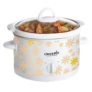

CrockPot.
☰
Home
About Us
Team
Specials
Training
Media
FAQs
Contact Us
Frequently Asked Questions
What is a slow cooker?
How does a slow cooker work?
What are the benefits of using a slow cooker?
Can I cook anything in a slow cooker?
How do I clean my slow cooker?
